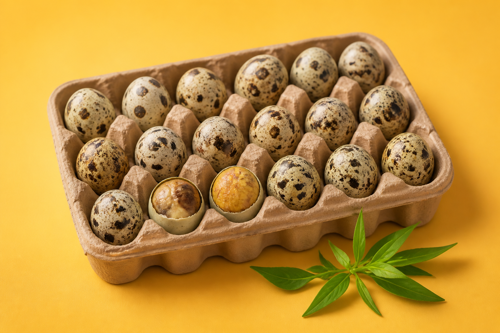
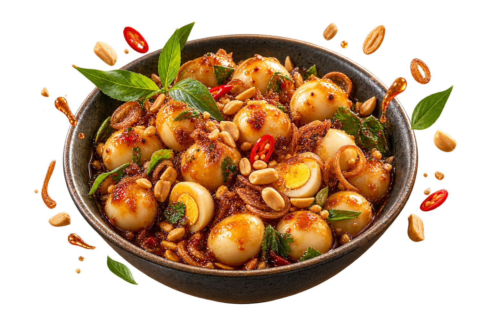

BEST SELLER

ĐẬM ĐÀ • BÉO BÙITrứng cút lộn
Trứng cút lộn
xào me
Trứng cút lộn quyện sốt me chua ngọt, thơm hành phi và đậu phộng.
Trứng cút xào me đậm đà, làm mới khi có đơn. Một trải nghiệm ăn vặt vừa thân quen vừa cực cuốn.

Mỗi phần được chuẩn bị khi có đơn, đóng gói cẩn thận và giao đến bạn trong trạng thái ngon nhất.